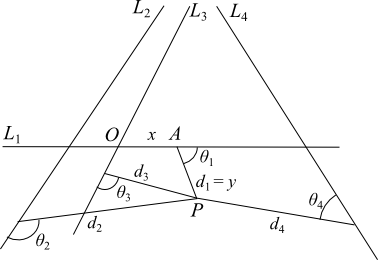

Descartes’ Mathematics
To speak of René Descartes’ contributions to the history of mathematics is to speak of his La Géométrie (1637), a short tract included with the anonymously published Discourse on Method. In La Géométrie, Descartes details a groundbreaking program for geometrical problem-solving—what he refers to as a “geometrical calculus” (calcul géométrique)—that rests on a distinctive approach to the relationship between algebra and geometry. Specifically, Descartes offers innovative algebraic techniques for analyzing geometrical problems, a novel way of understanding the connection between a curve’s construction and its algebraic equation, and an algebraic classification of curves that is based on the degree of the equations used to represent these curves.
The problem-solving techniques and mathematical results that Descartes presents in La Géométrie were both novel and incredibly influential on the practice of early modern mathematics. However, we can also locate in La Géométrie a philosophical significance: The blending of algebra and geometry and the peculiar approach to the “geometrical” status of curves which characterize Descartes’ mathematical program stand as notable contributions to the on-going philosophical debates that surrounded early modern mathematical practice. By drawing on the context in which Descartes’ mathematical researches took place, and examining the main questions and issues that shaped Descartes’ early mathematical researches, both the historical and philosophical significance of Books One and Two of La Géométrie will be highlighted in what follows.[1]
- 1. The Background to Descartes’ Mathematical Researches
- 2. Descartes’ Early Mathematical Researches (ca. 1616–1629)
- 3. La Géométrie (1637)
- Bibliography
- Academic Tools
- Other Internet Resources
- Related Entries
1. The Background to Descartes’ Mathematical Researches
When Descartes’ mathematical researches commenced in the early seventeenth century, mathematicians were wrestling with questions concerning the appropriate methods for geometrical proof and, in particular, the criteria for identifying curves that met the exact and rigorous standards of geometry and that could thus be used in geometrical problem-solving. These issues were given an added sense of urgency for practicing mathematicians when, in 1588, Commandino’s Latin translation of Pappus’s Collection (early fourth century CE) was published. In the Collection Pappus appeals to the ancient practice of geometry as he offers normative claims about how geometrical problems ought to be solved. Early modern readers gave special attention to Pappus’s proposals concerning (1) how a mathematician should construct the curves used in geometrical proof, and (2) how a geometer should apply the methods of analysis and synthesis in geometrical problem-solving. The construction of curves will be treated in 1.1 and analysis and synthesis in section 1.2 below.
1.1 The Construction of Curves and the Solution to Geometrical Problems
Pappus’s claims regarding the proper methods for constructing geometrical curves are couched in terms of the ancient classification of geometrical problems, which he famously describes in Book III of the Collection:
The ancients stated that there are three kinds of geometrical problems, and that some are called plane, others solid, and others line-like; and those that can be solved by straight lines and the circumference of a circle are rightly called plane because the lines by means of which these problems are solved have their origin in the plane. But such problems that must be solved by assuming one or more conic sections in the construction, are called solid because for their construction it is necessary to use the surfaces of solid figures, namely cones. There remains a third kind that is called line-like. For in their construction other lines than the ones just mentioned are assumed, having an inconstant and changeable origin, such as spirals, and the curves that the Greeks call tetragonizousas [“square-making”], and which we call “quandrantes,” and conchoids, and cissoids, which have many amazing properties (Pappus 1588, III, §7; translation from Bos 2001, 38).
We notice in the above remarks that Pappus bases his classification of geometrical problems on the construction of the curves necessary for the solution of a problem: If a problem is solved by a curve constructible by straightedge and compass, it is planar; if a problem is solved by a curve constructible by conic section, it is solid; and if a problem is solved by a curve that requires a more complicated construction—that has an “inconstant and changeable origin”—, it is line-like. Though a seemingly straightforward directive for how to classify geometrical problems, there remained an ambiguity in Pappus’s text about whether the so-called solid and line-like problems—problems that required the construction of conics and more complicated curves, such as the spiral—were in fact solvable by genuinely geometrical methods. That is, there was an ambiguity, and thus, an open question for early modern mathematicians, about whether problems that could not be solved by straightedge and compass construction met the rigorous standards of geometry. (For the special status of constructions by straightedge and compass in Greek mathematics, see Heath (1921) and Knorr (1986). For helpful overviews of the historical development of Greek mathematics, see classics such as Merzbach and Boyer (2011) and volume 1 of Kline (1972).)
A few examples will help clarify what is at stake here. The problem of bisecting a given angle is counted among planar problems, because, as detailed by Euclid in Elements I.9, to construct the line segment that divides a given angle into two equal parts, we construct (by compass) three circles of equal radius, and then (by straightedge) join the vertex of the angle with the point at which the circles intersect (Euclid 1956, Volume I, 264–265). Notice here that, to generate the solution, curves are used to construct a point that gives the solution to the problem, namely, by constructing the circles, we identify a point that allows us to bisect the curve. (When dealing with locus problems, such as the Pappus problem, the curves that are constructed are themselves the solution to the problem. See section 3 below.) The problem of trisecting an angle, on the other hand, was considered a line-like problem, because its solution required the construction of curves, such as the spiral, which were not constructible by straightedge and compass. Perhaps most famous among line-like problems is that of squaring the circle; for those who deemed this problem solvable, the solution required the construction of a curve such as the quadratrix, a curve that was proposed by the ancients in order to solve this very problem (which is how the curve received its name). Certainly, the generation of such curves could be described; Archimedes famously describes the generation of the spiral in Definition 1 of his Spirals and Pappus describes the generation of the quadratrix in Book IV of the Collection. However, these descriptions were considered “more complicated” precisely because they go beyond the intersection of curves that are generated by straightedge and compass construction. For instance, according to Archimedes, the spiral is generated by uniformly moving a line segment around a given point while tracing the path of a point that itself moves uniformly along the line segment. And, according to Pappus, the quadratrix is generated by the uniform motions of two line segments, where one segment moves around the center of a given circle and the other moves through a quadrant of the circle. (Cf. Bos 2001, 40–42 for the details of both these constructions.) In a similar vein, the construction of conics was considered more complicated: One of the accepted techniques for constructing a conic required cutting a cone in a specified way, which again, went beyond the consideration of intersecting curves that were constructible by straightedge and compass.
In the Collection, Pappus does not offer a firm verdict on whether the conics and “more complicated” curves meet the rigorous standards of geometrical construction and hence, on whether they are admissible in the domain of geometry. In the case of the conics, he relies on Apollonius’s commentary and reports the usefulness of these curves for the synthesis (or proofs) of some problems (Pappus, 116). However, to claim a curve useful is quite different from claiming it can be constructed by properly geometrical methods (as we’ll see more clearly below). Moreover, in the case of the quadratrix, Pappus sets out the description of the curve in Book IV of the Collection, and then immediately proceeds to identify the common objections to the curve’s description, e.g., that there is a petitio principii in the very definition of the curve, without commenting on whether these objections can be overcome. Thus, although it was known by the ancients that conics and other complicated curves could be used to solve outstanding problems, it was not clear to early modern mathematicians whether the ancients considered these solutions genuinely geometrical. In other words, it was not clear from Pappus’s Collection whether these curves were admissible in geometrical problem-solving and therefore, whether solid problems (such as identifying the mean proportionals between given line segments) or line-like problems (such as trisecting an angle and squaring the circle) had genuine geometrical solutions.
Consequently, after the publication of Commandino’s translation of the Collection, early modern mathematicians gave added attention to the questions of whether and why these curves should be used in geometrical problem-solving. The spiral and quadratrix were prominent in such discussions, because, as noted above, they could be used to address some of the more famous outstanding geometrical problems, namely, angle trisection and squaring the circle. [2] For instance, in his second and expanded (1589) edition of Euclid’s Elements (which was first published in 1574) as well as in his Geometria practica (1604), Christoph Clavius discusses the status of the quadratrix. Accepting the objections to the description of the quadratrix detailed by Pappus in the Collection, Clavius supplies what he deems a “truly geometrical” construction of the curve that would legitimize its use in geometrical problem-solving, and in solving the problem of squaring the circle in particular. His construction is a pointwise one: We begin with a quadrant of a circle (as in Pappus’s description) but rather than relying on the intersection of uniformly moving segments to describe the curve, Clavius proceeds by first identifying the points of intersection between segments that bisect the quadrant and segments that bisect the arc of the quadrant. That is, we identify the several intersecting points of segments which are constructible by straightedge and compass, and then, to generate the quadratrix, we connect the (arbitrarily many) intersecting points, which are evenly spaced along the sought after curve. Therefore, to construct the quadratrix according to Clavius’s method, we still go beyond basic straightedge and compass constructions (connecting the points in this case cannot be done by straightedge, as in the case of bisection), but one need not consider the simultaneous motions of lines as Pappus’s construction requires. (See Bos 2001, 161–162 for Clavius’s construction of the quadratrix and compare with Pappus’s construction on Bos 2001, 40–42. For Descartes’ assessment of Clavius’s pointwise construction see section 3.3 below.)
According to Clavius’s commentary of 1589, this pointwise construction of the quadratrix was an improvement over that offered by Pappus, because it was more accurate: Since the pointwise construction allowed one to identify arbitrarily many points along the curve, one could trace the quadratrix with greater precision than if one had to consider the intersection of two moving lines. To support his case, Clavius relates his pointwise construction of the quadratrix with the pointwise construction of conics proposed by the “great geometer” Apollonius and claims that “unless someone wants to reject as useless and ungeometrical the whole doctrine of conic sections” proposed by Apollonius, “one is forced to accept our present description of the [quadratrix] as entirely geometrical” (cited in Bos 2001, 163). However, in his later Geometria practica (1604), Clavius tempers his assessment of both the quadratrix and the conics. He maintains that these more complicated curves could be constructed by pointwise methods that offered greater precision, but the curves thus generated were no longer presented as absolutely geometrical. Instead, they were presented as “more accurate,” “easier,” and geometrical “in a certain way” (Bos 2001, 164–5).
In his Supplement of geometry (1593), François Viète also addresses the outstanding problems of geometry that were solvable by curves that could not constructed by straightedge and compass. He claims that at least some such problems could be solved by properly geometrically means by adopting as his postulate that the so-called neusis problem could be solved. That is, he assumed that given two lines, a point \(O\), and a segment \(a\), it was possible to draw a straight line through \(O\) intersecting the two lines in points \(A\) and \(B\) such that \(AB = a\) (Bos 2001, 167–168). In the Supplement, Viète shows that once we accept as a fundamental geometrical postulate that the neusis problem is solvable, then we can, by legitimately geometrical means, solve the problems of trisecting a given angle and of constructing the two mean proportional between two given line segments. Specifically and importantly, we generate these solutions without having to rely on the construction of conics or higher-order curves, such as the spiral or quadratrix (Bos 2001, 168).
The neusis postulate was a powerful tool in Viète’s problem-solving arsenal: By assuming that the neusis problem could be solved, he expanded the domain of acceptable geometrical constructions beyond straightedge and compass. However, questions remained about the acceptability of this assumption as a postulate, since Viète does not detail the construction of the neusis problem but simply claims that the neusis postulate should not be difficult for his readers to accept. In making this assumption, he was taking a significant departure from ancient geometers, for whom the neusis problem could only be solved by curves that were not constructible by straightedge and compass. For instance, Pappus rendered the construction of the neusis a solid problem and solved it by means of conics in Book IV of the Collection, and Nicomedes rendered the construction of the neusis a line-like problem and devised the cissoid for its solution. (See Bos 2001, 53–54 for Pappus’s solution and 30–33 for Nicomedes’ solution. See also Pappus 1986, 112–114 for the classification of the neusis as a sold problem.)
Nonetheless, according to Viète, if a problem could not be solved by neusis, then questions of legitimacy remained. For instance, neither the spiral nor the quadratrix—curves used to square the circle by Archimedes and Pappus, respectively—could be constructed in the same obvious and “not difficult” way as the neusis. Viète appears to grant that the pointwise construction of the quadratrix, such as that presented by Clavius, was in fact more precise than other constructions of the curve, but, Viète claims, this greater precision does not legitimize its status as genuinely geometrical. Indeed, such precise descriptions relied on instruments and, thus, on the mechanical arts and, as such, were not geometrical. Moreover, Viète claimed that, in general, curves not constructed by the intersection of curves, such as the Archimedean spiral, were “not described in the way of true knowledge” (Bos 2001, 177). Therefore, just as the quadratrix, these curves were not legitimately geometrical, which left the problem of squaring the circle an open problem for Viète.
1.2 Geometrical Analysis and Algebra
Viète’s program of geometrical problem-solving had an added significance: By adopting as his postulate that the neusis problem could be solved, Viète was able to link geometrical construction with his algebraic analysis of geometrical problems and show that cubic equations had a genuinely geometrical solution (i.e., that the roots of cubic equations could be constructed by consideration of intersecting geometrical curves). Viète’s program nicely illustrates the merging of algebra with geometrical problem-solving in early modern mathematics, and moreover, nicely illustrates an influential way of interpreting Pappus’s claims in the Collection regarding how a mathematician should apply the methods of analysis and synthesis in geometrical problem-solving.
As noted above, Pappus’s remarks concerning the two-fold method of analysis (resolutio) and synthesis (compositio) in the Collection received a great deal of attention from early modern readers. And as with his remarks concerning the construction of geometrical curves, there were ambiguities in his discussion, which motivated varying interpretations of the method and its application to geometrical problems. Here is a portion of what Pappus claims of analysis and synthesis in Book VII of the Collection:
Now analysis is the path from what one is seeking, as if it were established, by way of its consequences, to something that is established by synthesis. That is to say, in analysis we assume what is sought as if it has been achieved, and look for the thing from which it follows, and again what comes before that, until by regressing in this way we come upon some one of the things that are already known, or that occupy the rank of a first principle. We call this kind of method “analysis,” as if to say anapalin lysis (reduction backward). In synthesis, by reversal, we assume what was obtained last in the analysis to have been achieved already, and, setting now in natural order, as precedents, what before were following, and fitting them to each other, we attain the end of the construction of what was sought. This is what we call “synthesis” (Pappus, 82–83).
Some of the directives Pappus offers here seem straightforward. The mathematician begins by assuming what is sought after as if it has been achieved until, through analysis, she reaches something that is already known. Then, the mathematician reverses the steps, and through synthesis, sets out “in natural order” the deduction leading from what is known to what is sought after. However, there are ambiguities in Pappus’s discussion. Perhaps most importantly, it is not clear how reversing the steps of analysis could offer a proof, or synthesis, of a stated problem, since the deductions of analysis rely on conditionals (if \(x\), then \(y)\) whereas a reversal would require biconditionals \((x\) iff \(y)\) to achieve synthesis (see Guicciardini 2009, 31–38 for further interpretative problems surrounding Pappus’s remarks; for more on analysis and synthesis in the Renaissance see the classic Hintikka and Remes 1974, the essays in Otte and Panza 1997, and Panza 2007). Ambiguities notwithstanding, for Viète and other early modern mathematicians there was one feature of the discussion that was incredibly important: Pappus makes clear that the ancients had a method of analysis at their disposal, and many early modern mathematicians attempted to align this method from antiquity with the algebraic methods of geometrical analysis that they were using.
Prior to the end of the sixteenth century, mathematicians had already used algebra in the analysis of geometrical problems, but the program Viète details marks a significant step forward. On the one hand, in his Isagoge [Introduction to the analytic art] of 1591, which was presented as part of a larger project to restore ancient analysis (entitled Book of the restored mathematical analysis or the new algebra), Viète introduces a notation that allowed him to treat magnitudes in a general way. The literal symbols he uses (consonants and vowels depending on whether the variable in the equation was unknown or indeterminate, respectively) represent magnitudes generally and do not specify whether they are arithmetical magnitudes (numbers) or geometrical magnitudes (such as line segments or angles). He can thus represent arithmetic operations as applied to magnitudes in general. For instance, \(A + B\) represents the addition of two magnitudes and does not specify whether \(A\) and \(B\) are numbers (in which case the addition represents a process of counting) or geometrical objects (in which case the addition represents the combination of two line segments) (see Viète 1591, 11–27; for the significance of Viète’s “new algebra” for early modern mathematics see Bos 2001, Chp. 8; Mahoney 1973, Chp. 2; and Pycior 1997, Chp. 1).
On the other hand, the algebraic, symbolic analysis of geometrical problems that Viète proposes was offered as the first step in a three-step process that could render a geometrical solution. The three stages were: (1) zetetics, which involved the algebraic analysis (or elaboration) of a problem; (2) poristics, which clarified the relations between magnitudes by appeal to the theory of proportions (see Giusti 1992 on the importance of proportion theory for Viète’s mathematics); and (3) exegetics, which offered the genuine geometrical solution (or proof) of the problem. To better understand the connection between the stages of zetetics and exegetics, which roughly correspond to the ancient stages of analysis and synthesis, consider the problem of identifying two mean proportionals. Geometrically, the problem is as follows:
Given line segments \(a\) and \(b\), find \(x\) and \(y\) such that \(a : x :: x : y :: y : b\), or put differently, such that
\[ \frac{a}{x} : \frac{x}{y} : \frac{y}{b} \]In the zetetic (analytic) stage of Viète’s analysis, we follow Pappus’s directive to treat “what is sought as if it has been achieved” precisely by naming the unknowns by variables. Then, by assuming the equivalence between proportions (as Viète does), we can solve for the variables \(x\) and \(y\) and establish that \(x\) and \(y\) have the following relationship to \(a\) and \(b\):
- \(x^2 = ay\) and
- \(y^2 = xb\).
Solving (1) for \(y\), we have \(y = x^2 /a\), and by substitution into (2), we get \(y^2 = (x^2 /a)^2 = x^4 /a^2 = xb\), which yields:
- \(x^3 = a^2 b\).
Solving (2) for \(x\), we have \(x = y^2 /b\), and by substitution into (1), we get \(x^2 = (y^2 /b)^2 = y^4 /b^2 = ay\), which yields:
- \(y^3 = ab^2.\)
Algebraically, then, the problem of finding two mean proportional can be elaborated as follows:
Given (magnitudes) \(a\) and \(b\), the problem is to find (magnitudes) \(x\) and \(y\) such that \(x^3 = a^2 b\) and \(y^3 = ab^2\).
In this zetetic stage of analysis, the geometrical problem is transformed into the algebraic problem of solving a standard-form cubic equation (i.e., a cubic equation that does not include a quadratic term). However, for Viète, the genuine solution to the problem must be supplied in the stage of exegetics, which offers the geometrical construction and thus the synthesis, or proof.[3] And it is here that the neusis postulate supplies the guarantee that such a solution can be found: By assuming the neusis problem solved, we can construct the curve that satisfies the two cubic equations above (i.e., we can construct the roots of the equations) and thereby construct the sought after mean proportionals. In other words, there was an assumed equivalence in Viète’s program between solving an algebraic problem that required identifying the roots of specified cubic equations and solving a geometrical problem that required the construction of a curve. We also see this in his treatment of trisecting an angle: To solve the angle-trisection problem is to solve two standard-form cubic equations, which Viète reveals in his algebraic elaboration of the geometrical problem (cf. Bos 2001, 173–176). In fact, assuming the neusis postulate, we can solve any standard-form cubic equation, and since it was already known at the time that all fourth-degree equations are reducible to standard-form cubic equations, what Viète supplied with his marriage of algebra and geometry in his 1594 Supplement was a program that solved all line-like problems that could be elaborated in terms of cubic and quartic equations.
As powerful as Viète’s program was, questions remained for practicing mathematicians. Should we, as Viète urged, accept the neusis postulate as “not difficult” and thus as a foundational construction principle for geometry? And should we follow Viète in claiming that other curves that had significant problem-solving power in geometry—such as the spiral and quadratrix—were not legitimately geometrical because they could not be constructed by neusis? Moreover, there were questions about the connection Viète forged between algebra and geometry. For Descartes in particular, there were questions of whether there was a deeper, more fundamental connection that could be forged between the solutions of algebraic problems that were expressed in terms of equations and the solutions of geometrical problems that required the construction of curves. However, these questions did not come into full relief for Descartes until the early 1630s, after more than a decade of studying problems in both geometry and algebra.
2. Descartes’ Early Mathematical Researches (ca. 1616–1629)
2.1 Texts and sources
Based on the autobiographical narrative included in Part One of the Discourse on Method (1637), where Descartes describes what he learned when he was “at one of the most famous schools in Europe” (AT VI, 5; CSM I, 113), it is generally agreed that Descartes’ initial study of mathematics commenced when he was a student at La Fleche. He reports in the Discourse that, when we he was younger, his mathematical studies included some geometrical analysis and algebra (AT VI, 17; CSM I, 119), and he also mentions that he “delighted in mathematics, because of the certainty and self-evidence of its reasonings” (AT VI, 7; CSM I, 114). However, no specific texts or mathematical problems are mentioned in the 1637 autobiographical sketch. Thus, we rely on remarks made in correspondence for the more specific details of Descartes’ study of mathematics at La Fleche, and these remarks strongly suggest that Clavius was a key figure in Descartes’ earliest (perhaps even initial) study of mathematics. For instance, in a letter from March 1646 written by John Pell to Charles Cavendish, we have good reason to believe that ca. 1616, while a student at La Fleche, Descartes read Clavius’s Algebra (1608). Reporting on his meeting with Descartes in Amsterdam earlier that same year, Pell writes in particular that “[Descartes] says he had no other instructor for Algebra than ye reading of Clavy Algebra above 30 years ago” (cited in Sasaki 2003, 47; cf. AT IV, 729–730 and Sasaki 2003, 45–47 for other relevant portions of that letter). Moreover, in a 13 November 1629 letter written to Mersenne, Descartes refers to the second (1589) edition of Clavius’s annotated version of Euclid’s Elements, in which, as noted above, Clavius presents his pointwise construction of the quadratrix and uses the curve to solve the problem of squaring the circle (AT I, 70–71; the portion of the letter that references Clavius is translated in Sasaki (2003), 47). And following Sasaki (2003), it is reasonable to conclude that Descartes was at least aware of Clavius’ textbook Geometria practica (1604), which was included as part of the mathematics curriculum of La Fleche. (See Sasaki 2003, Chapter Two on Clavius’ influence on and inclusion in the mathematics curriculum of Jesuit schools in the early 1600s.)
Although our evidence of the mathematics that Descartes studied at La Fleche is sketchy, we are quite certain that Descartes’ entrance into the debates of early modern mathematics began in earnest when he met Isaac Beeckman in Breda, Holland in 1618. Among other things, Beeckman and Descartes explored the fruitfulness of applying mathematics to natural philosophy and discussed issues pertaining to physico-mathematics. It is in this period that Descartes composed his Compendium musicae for Beeckman, a text in which he addresses the application of mathematics to music and also famously discusses the law of free fall. (Compare Koyré 1939, 99–128 and Schuster 2013, Chapter 3.5 on Descartes’ treatment of free fall in this early text. For discussion of Descartes’ pursuit of causal knowledge in his physico-mathematical researches in optics during this period, see Schuster 2013, Chapter 3.6.)
Beyond having a common interest in applied mathematics, Beeckman and Descartes also discussed problems of pure mathematics, both in geometry and in algebra, and Descartes’ interest in such problems extended to 1628–1629, when he returned to Holland to meet Beeckman after his travels through Germany, France, and Italy. Our understanding of what Descartes accomplished in pure mathematics during this eleven year period relies on the following sources:
- Five letters written to Beeckman in 1619, which Beeckman transcribed in his Journal. Beeckman’s Journal was recovered in 1905 and published in 4 volumes by DeWaard some 35 years later, hereafter Beeckman (1604–1634). The excerpts of these letters that are relevant to Descartes’ mathematics are included in AT X. (For more details on how these letters became available to us, see Sasaki 2003, 95–96.)
- The Cogitationes privatae (Private Reflections), which dates from ca. 1619–1620 and which Leibniz copied in 1676. This text is included in AT X. (For more details on how this text became available to us, see Bos 2001, 237, Note 17 and Sasaki 2003, 109.)
- The Progymnasmata de solidorum elementis, a geometry text which dates from around 1623 and which Leibniz partially copied in 1676. It has been translated into English by Pasquale Joseph Federico (1982) and into French by Pierre Costabel (1987).
- A specimen of general algebra, which Descartes gave to Beeckman after he returned to Holland in 1628. It was transcribed by Beeckman in his Journal under the title Algebra Des Cartes specimen quoddam and can be found in Volume III of Beeckman (1604–1634).
- Some texts on algebra that were given to Beeckman in early 1629. These were transcribed by Beeckman in his Journal in February 1629 and can be found in Volume IV of Beeckman (1604–1634).
- Several letters written to Mersenne in the 1630s in which Descartes refers to some of the mathematical researches he completed during the 1618–1629 period.
A look at some of the problems and proposals found in these mathematical works will help situate Descartes in his early modern mathematical context and will also help to highlight the results from this period that have an important connection to what is found in the opening books of the 1637 La Géométrie. To make these connections clear, the brief narrative below emphasizes the proposals Descartes made during the 1618–1629 period concerning (1) the criteria for geometrical curves and legitimately geometrical constructions, and (2) the relationship between algebra and geometry.
2.2 Problems and Proposals
The most famous letter written to Beeckman in 1619 dates from 26 March of that year. In this letter Descartes announces his plan to expound an “entirely new science [scientia penitus nova], by which all problems that can be posed, concerning any kind of quantity, continuous or discrete, can be generally solved” (AT X, 156). As he elaborates on how this new science will proceed, Descartes clarifies that his solutions to the problems of discrete and continuous quantities—that is, of arithmetic and geometry, respectively—will vary depending on the nature of the problem at hand. As he puts it,
[In this new science] each problem will be solved according to its own nature as for example, in arithmetic some questions are resolved by rational numbers, others only by surd [irrational] numbers, and others finally can be imagined but not solved. So also I hope to show for continuous quantities that some problems can be solved by straight lines and circles alone; others only by other curved lines, which, however, result from a single motion and can therefore be drawn with new types of compasses, which are no less exact and geometrical, I think, than the common ones used to draw circles; and finally others that can be solved by curved lines generated by diverse motions not subordinated to one another, which curves are certainly only imaginary such as the rather well-known quadratrix. I cannot imagine anything that could not be solved by such lines at least, though I hope to show which questions can be solved in this or that way and not any other, so that almost nothing will remain to be found in geometry. It is, of course, an infinite task, not for one man only. Incredibly ambitious; but I have seen some light through the dark chaos of the science, by the help of which I think all the thickest darkness can be dispelled (AT X, 156–158; CSMK 2–3; translation from Sasaki 2003, 102).
We notice in Descartes’ remarks concerning geometry in particular that the “entirely new science” he proposes will provide an exhaustive classification for problem-solving, where each of his three classes is determined by the curves needed for solution. This suggests an important overlap between Descartes’ three classes of geometrical problems and Pappus’s three classes, which, recall, were separated based on the types of curves required for solution: Planar problems are solvable by straightedge and compass, solid problems by conics, and line-like problems by more complicated curves that have an “inconstant and changeable origin.” However, there is also a significant difference between their classifications insofar as Descartes strongly suggests that those problems that require “imaginary” curves for their solution do not have a legitimately geometrical solution. Namely, just as some problems of arithmetic “can be imagined but not be solved,” so too in geometry, there is a class of problems that require curves that are “certainly only imaginary,” i.e., curves generated by “diverse motions,” and thus that are not geometrical in a proper sense. In this respect, Descartes is moving from Pappus’s descriptive classification to a normative one that separates geometrical curves from non-geometrical curves, and thereby distinguishes problems that have a legitimate geometrical solution from those that do not. Just as importantly, we see in Descartes’ letter his attempt to expand the scope of legitimate geometrical constructions beyond straightedge and compass by appealing to the motions needed to construct a curve. Specifically, as we see in the passage above, Descartes relies on the “single motions” of his “new types of compasses, which [he says] are no less exact and geometrical…than the common ones used to draw circles” in order to mark out a new class of problems that have legitimate geometrical solutions.
In his 26 March 1619 letter to Beeckman, Descartes does not elaborate on the “new types of compasses” to which he refers; he simply reports to Beeckman in the early portions of the letter that he has, in a short time, “discovered four conspicuous and entirely new demonstrations with the help of my compasses” (AT X, 154). Fortunately, more details about these compasses and Descartes’ demonstrations are included in Cogitationes privatae, or Private Reflections (ca. 1619–1620), a text in which Descartes applies three different “new compasses” (often referred to by commentators as “proportional compasses”) to the problems of (1) dividing a given angle into any number of equal parts, (2) constructing the roots of three types of cubic equations, and (3) describing a conic section. In the first two cases, as Descartes treats the angular section and mean proportional problems, the compasses on which he relies are used to generate a curve that will solve the problem at hand.
Figure 1.
Figure 2.
For instance, to solve the angular section problem, Descartes begins by presenting an instrument that includes four rulers (OA, OB, OC, OD), which are hinged at point O (figure 1). We then take four rods (HJ, FJ, GI, EI), which are of equal length \(a\), and attach them to the arms of the instrument such that they are a distance \(a\) from O and are pair-wise hinged at points J and I. Leaving OA stationary, we now move OD so as to vary the measure of angle DOA, and following the path of point J, we generate the curve KLM (figure 2). As Descartes has it, we can construct the curve KLM on any given angle by means of the instrument described above, because the angle we are trisecting plays no role in the construction of KLM. And once the curve KLM is constructed, the given angle can be trisected by means of some basic constructions with straight lines and circles. In this respect, the curve KLM is, for Descartes, the means for solving the angle trisection problem, and moreover, his treatment suggests that the construction can be generalized further so that, by means of his “new compass,” an angle can also be divided into 4, 5, or more equal parts. (I borrow my treatment of this construction from Domski 2009, 121, which is itself indebted to the presentation in Bos 2001, 237–239.)
![Figure 3: demonstration of a mesolabe. The mesolabe consists of a set of rulers. rulers YX and YZ are hinged at Y to form an adjustable angle XYZ. Ruler BC is perpendicular to YX and fixed at point B, C is on YZ and movable. Ruler CD is perpendicular to YZ and intersects YX at movable point D. DE is perpendicular to YX and intersect YZ at movable point E. EF is perpendicular to YZ and intersects YX at movable point F. FG is perpendicular to YX and intersects YZ at movable point G. GH is perpendicular to YZ and intersects YX at movable point H. Points D, F, and H trace out dotted lines. As the XYZ angle closes, all three points converge on A.](fig3.png)
Figure 3. Mesolabe
A similar approach is taken by Descartes when he treats the problem of constructing mean proportionals, where in this case, he appeals to his famous mesolabe compass, an instrument that is used in Book Three of the La Géométrie to solve the same problem. As in 1637, this compass is used to construct curves (the dotted lines in figure 3) that allow us to identify the mean proportionals between any number of given line segments. And as Viète before him, in the Private Reflections Descartes uses this construction of mean proportionals to identify the roots of standard-form cubic equations (see Bos 2001, 240–45).
Notice that these constructions illustrate the sort of “single motion” constructions to which Descartes refers in his 26 March 1619 letter to Beeckman: His new compasses generate curves by the single motion of a designated arm of the compass, and thus, the curves generated in this manner meet the standard of geometrical intelligibility—the standard by which to distinguish geometrical from imaginary curves—that is alluded to in the brief outline of the “entirely new science” that Descartes envisions. That such motions are completed by instruments does not threaten the constructed curve’s geometrical status. (As we saw above, Viète had leveled this charge against the instrumental, pointwise constructions provided by Clavius.) And moreover, we already notice in the mathematical research of 1619 Descartes’ focus on the intelligibility of motions as a standard for identifying legitimately geometrical curves. This theme will reemerge in Book Two of La Géométrie.
In addition, we find in Descartes’ early work an interest in the relationship between algebra and geometry that will be crucial to the program of geometrical analysis presented in Book One of La Géométrie, where at this early stage of his research, Descartes, like his contemporaries, is exploring the application of geometry to algebraic problems. For instance, as pointed out above, Descartes uses the construction of mean proportionals to solve algebraic equations in the Private Reflections, and in the same text he also shows an interest in the geometrical representation of numbers and of arithmetical operations. The same interest appears again in the later Progymnasmata de solidorum elementis excerpta ex manuscripto Cartesii (Preliminary exercises on the elements of solids extracted from a manuscript of Descartes, ca. 1623), a text in which Descartes offers a geometrical representation of numbers and of four of the five basic arithmetical operations (the four operations he treats are addition, subtraction, multiplication, and division).
Though there is some dispute among commentators about Descartes’ level of expertise in algebra during this early 1619–1623 period (compare Bos 2001, 245 with Sasaki 2003, 126), texts from 1628–1629 show Descartes making great advances in algebra in a relatively small amount of time. Two textual sources are of particular interest: (1) The specimen of algebra given to and transcribed by Beeckman in 1628 upon Descartes’ return to Holland, and (2) a text on the construction of roots for cubic and quartic equations given to Beeckman in early 1629.[4] In the Specimen, Descartes presents a rather basic problem-solving program (or schematism) for algebra that relies on two-dimensional figures (lines and surfaces). The texts given to Beeckman several months later, which Descartes composed while in Holland, show a great advance over what’s found in the Specimen, since in these texts he appeals to conic sections (or solids) in his problem-solving regime. For instance, Descartes constructs two mean proportionals by the intersection of circle and parabola (a method he had discovered around 1625 according to Bos 2001, 255). More impressively, in a different text from this same period, Descartes offers a method for constructing all solid problems, i.e., for solving all third- and fourth-degree equations.
While some of the results from this period are connected with the problem-solving program presented in the 1637 La Géométrie, Rabouin (2010) points out that it is still not clear whether Descartes discovered his methods for solution using the techniques that are applied in 1637 (Rabouin 2010, 456). As such, Rabouin urges us to resist the somewhat standard reading of Descartes’ early mathematical works according to which there is a linear and teleological progression from the 1619 pronouncement of an “entirely new science” to the groundbreaking program of La Géométrie (a reading found, for instance, in Sasaki 2003, especially 156–176). According to Rabouin, it is not until the early 1630s, when Descartes engages with the Pappus problem—what Bos also considers “the crucial catalyst” of Descartes’ mature mathematical researches (Bos 2001, 283)—that he returns to his 1619 project to craft a new science of geometry that is grounded on a new classification of curves and problems. Following Rabouin, it is at this point of his mathematical career that Descartes more clearly sees just how crucial the interplay of algebraic equations and geometry could be for a general program of geometrical problem-solving.
3. La Géométrie (1637)
In late 1631, the Dutch mathematician Golius urged Descartes to consider the solution to the Pappus problem. Unlike the geometrical problems that occupied Descartes’ early researches, the Pappus problem is a locus problem, i.e., a problem whose solution requires constructing a curve—the “Pappus curve” according to Bos’s terminology—that includes all the points that satisfy the relationship stated in the problem. Generally speaking, the Pappus Problem begins with a given number of lines, a given number of angles, a given ratio, and a given segment, and the task is identify a curve such that all the points on the curve satisfy a specified relation to the given ratio. For instance, in the most basic two-line Pappus Problem (figure 4), we are given two lines \((L_1, L_2)\), two angles \((\theta_1 , \theta_2)\), and a ratio \(\beta\). We designate \(d_1\) to be the oblique distance between a point \(P\) and \(L_1\) such that \(P\) creates \(\theta_1\) with \(L_1\), and we designate \(d_2\) to be the oblique distance between a point \(P\) in the plane and \(L_2\) such that \(P\) creates \(\theta_2\) with \(L_2\). The problem is to find all points \(P\) such that \(d_1 : d_2 = \beta\). In this case, all the sought after points \(P\) will lie along two straight lines, one line to the right of \(L_1\) and the other to the left of \(L_1\). (See figure 5 for Bos’s presentation of the general problem.)
Figure 4. A Two line Pappus problem
In the Collection, Pappus presents a solution to the three and four line versions of the problem (i.e., the versions of the problem in which we begin with three or four given lines and angles) as well as Apollonius’s solution to the six-line case, which relies on his theory of conics and the transformation of areas to construct the locus of points (Pappus, 118–123). However, Pappus does not treat the general \((n\)-line) case, and this is the advance of the solution Descartes achieves in 1632, a solution published in La Géométrie, where he claims that, unlike the ancients, he has found a method to successfully “determine, describe, [and] explain the nature of the line required when the question [of the Pappus Problem] involves a greater number of lines” (G, 22). And as Descartes reports to Mersenne in 1632, he could not have found his general solution without the help of algebra:
I must admit that I took five or six weeks to find the solution [to the Pappus Problem]; and if anyone else discovers it, I will not believe that he is ignorant of algebra (To Mersenne 5 April 1632; AT I, 244; CSMK, 37).
Figure 5. The General Pappus Problem (from Bos 2001,Fig. 19.1, 273)
Given: a Line \(L_i\) in the plane, \(n\) angles \(\theta_i\), a ratio \(\beta\), a line segment \(a\). For an point \(P\) in plane, let \(d\) be the oblique distance between \(P\) and \(L_i\) such that \(P\) creates \(\theta_i\) with \(L_i\).
Problem: Find the locus of points \(P\) such that the following ratios are equal to the given ratio \(\beta{:}\)
For 3 lines: \((d_1)^2\) : \(d_2 d_3\) For 4 lines: \(d_1 d_2\) : \(d_3 d_4\) For 5 lines: \(d_1 d_2 d_2\) : \(ad_4 d_5\) For 6 lines: \(d_1 d_2 d_3\) : \(d_4 d_5 d_6\) In general,
For an even \(2k\) number of lines: \(d_1 \ldots d_k\) : \(d_{k+1}\ldots d_{2k}\) For an uneven \(2k+1\) number of lines: \(d_1 \ldots d_{k+1}\) : \(ad_{k+2}\ldots d_{2k+1}\)
According to Bos, consideration of the general Pappus Problem “provided [Descartes], in 1632, with a new ordered vision of the realm of geometry and it shaped his convictions about the structure and the proper methods of geometry” (Bos 2001, 283). The best evidence we have of the impact the problem had on Descartes’ approach to geometry is La Géométrie itself: In La Géométrie, the Pappus problem is given pride of place as Descartes details his “geometrical calculus” and demonstrates the power of his novel program for solving geometrical problems. It is treated in Book One, as Descartes explains his geometrical analysis, and then again in Book Two, where Descartes offers the synthesis, i.e., the geometrical demonstration, of his solution to the Pappus Problem in \(n\)-lines, a demonstration which relies on the famous distinction between “geometric” and “mechanical” curves that begins this part of the work.
3.1 Book One: Descartes’ Geometrical Analysis
Book One of La Géométrie is entitled “Problems the construction of which requires only straight lines and circles,” and it is in this opening book that Descartes details his geometrical analysis and describes how geometrical problems are to be explicated algebraically. In this respect, what we find in Book One is similar to the algebraic elaboration of geometrical problems presented by Viète in his 1594 Supplement of geometry as he explains the stage of exegetics. That said, Descartes’ approach to analysis rests on innovations in notation and formalism as well as in the merging of geometry and arithmetic which move him beyond Viète’s analysis, lending some credence to Descartes’ remark to Mersenne that, in La Géométrie, his program for geometry begins where Viète’s left off (To Mersenne, December 1637, AT I, 479; CSMK 77–79; See Macbeth 2004 for discussion of the relationship between Viète’s “analytical art” and Descartes’ use of analysis in geometry).
Book One commences with the geometrical interpretation of algebraic operations, which, we saw above, Descartes had already explored in the early period of his mathematical research. However, what we are presented in 1637 is, as Guicciardini aptly describes, a “gigantic innovation” both over Descartes’ previous work and the work of his contemporaries (Guicciardini 2009, 38). On the one hand, Descartes offers a geometrical interpretation of root extraction and thus treats five arithmetical operations (as opposed to the four operations of addition, subtraction, multiplication, and division that were treated in his early work). On the other hand, and more significantly, his treatment relies on an interpretation of arithmetical operations according to which these operations are taken to be closed operations on line segments. Traditionally, for instance, the product of two segments \(a \times b\) was interpreted as a rectangle, but for Descartes, the product is interpreted as a segment. This allows Descartes to translate geometrical problems into equations (that include products such as \(a \times b)\) and treat each term of the equation as similar in kind. Finally, Descartes uses a new exponential notation as he sets forth equations of multiple terms in Book One, and this notation, which replaces the traditional cossic notation of early modern algebra, allows Descartes to tighten the connection between algebra and geometry, and more specifically, between the algebraic representation of curves through equations with the geometrical classification and geometrical solution of stated problems (as we will see more clearly below in section 3.2).
With his new geometrical interpretation of the five basic arithmetical operations at his disposal, Descartes proceeds to describes how, in the stage of geometrical analysis, one is to give an algebraic interpretation of a geometrical problem:
If, then, we wish to solve any problem, we first suppose the solution already effected, and give names to all the lines that seem needful for its construction,—to those that are unknown as well as to those that are known. Then, making no distinction between unknown and unknown lines, we must unravel the difficulty in any way that shows most naturally the relations between these lines, until we find it possible to express a single quantity in two ways. This will constitute an equation, since the terms of one of these two expressions are together equal to the terms of the other (G, 6–9).
We notice that the key to Descartes’ analysis is to make no distinction between the known and unknown quantities in the problem: Both kinds of quantities are granted a variable (generally, \(a, b, c\ldots\) for known quantities and \(x, y, z\ldots\) for unknown quantities), and thus, we treat the unknowns as if their values were already found. Or, as Descartes puts it, we “suppose the solution already effected.” The task then is to reduce the problem to an equation (in contemporary terms, to a polynomial equation in two unknowns) that expresses the unknown quantity, or quantities, in terms of the known quantities. For instance, take the following problem:[5]
Given a line segment AB containing point C (see figure 6), the problem is to produce AB to D such that the product AD\(\times\)DB is equal to the square of CD. Let AC \(= a\), CB \(= b\), and BD \(= x\), which yields AD \(= a + b + x\) and CD \(= b + x\). Thus, the problem to find BD such that AD\(\times\)DB = (CD)\(^2\) is algebraically equivalent to finding \(x\) such that: \((a + b + x)\times(x) = (b + x)^2\). Or, solving for \(x\), the problem is to find \(x\) such that, given \(a\) and \(b, x = b^2 / (a\)—\(b)\).
Figure 6.
In this example, we are dealing with a determinate problem, i.e., a problem to which there are a finite number of solutions, and we can therefore reduce the problem to a single equation that expresses the unknown quantity in terms of the known quantities. However, as Descartes points out, there are also indeterminate problems that involve an infinite number of solutions. (Locus problems, such as the Pappus Problem, are of this sort, because the solution includes the infinitely many points that lie along a curve.) When dealing with an indeterminate problem, Descartes instructs us that “we may arbitrarily choose lines of known length for each unknown line to which there corresponds no equation” (G, 9), i.e., we are to set the unknown lines as oblique coordinates that have a stated value. We then generate several equations that express the unknown quantities in terms of one or more known quantities, and solve the equations simultaneously. This is precisely the approach that Descartes takes as he treats the Pappus Problem in Book One.
Figure 7. The Four-Line Pappus Problem in Book One (G, 27)
Descartes begins with consideration of the problem when we are given three or four lines, which, borrowing from Guicciardini (2009), can be stated as follows (see figure 7):
Having three or four lines given in position, it is required to find the locus of points C from which drawing three or four lines to the three or four lines given in position and making given angles with each one of the given lines the following condition holds: the rectangle [or product] of two of the three lines so drawn shall bear a given ratio to the square of the third (if there be only three), or to the rectangle [or product] of the other two (if there be four) (Guicciardini 2009, 54; based on G, 22).
In Book One, Descartes applies his geometrical analysis to the four-line case of the Pappus problem. He begins by designating two given line segments (of unknown length) AB and BC as oblique coordinates \(x\) and \(y\), respectively, such that all other lines needed to solve the problem will be expressed in terms of \(x\) and \(y\).[6] Then, by considering the angles given in the problem and the properties of similar triangles, he generates an algebraic expression of the sought after points C in terms of the two unknowns \(x\) and \(y\) and the known quantity \(z\) (where \(z\) designates the ratio given in the problem) (G, 29–30).
Importantly, the analytic method that Descartes uses in the four-line case is generalized to apply to the general, \(n\)-line version of the Pappus Problem. That is, Descartes’ claim is that no matter how many lines and angles are given in the problem, it is possible, by means of his analytic method, to express the sought after points C in terms of two unknown quantities (in contemporary terms, to reduce the problem to a polynomial equation in two unknowns) (G, 33). As a result, for any \(n\)-line version of the Pappus Problem, we can generate values for C and construct the sought after Pappus curve in a pointwise manner by assigning different values to \(x\) and \(y\). As Descartes puts it,
Furthermore, to determine the point C, but one condition is needed, namely, that the product of a certain number of lines shall be equal to, or (what is quite as simple), shall bear a given ratio to the product of certain other lines. Since this condition can be expressed by a single equation in two unknown quantities, we may give any value we please to either \(x\) or \(y\) and find the value of the other from this equation. It is obvious that when not more than five lines are given, the quantity \(x\), which is not used to express the first of the lines can never be of degree higher than the second.
Assigning a value to \(y\), we have \(x^2 = \pm ax \pm b^2\), and therefore \(x\) can be found with ruler and compasses, by a method [for constructing roots] already explained. If then we should take successively an infinite number of different values for the line \(y\), we should obtain an infinite number of values for the line \(x\), and therefore an infinity of different points, such as C, by means of which the required curve can be drawn (G, 34).
The result of Descartes’ analysis, as indicated by the remarks above, is that the curve that includes the sought after points C can be pointwise constructed by using ruler and compass to solve for the roots of a second-degree equation in two unknowns. He then generalizes this result and claims that the solution points for any problem that can be reduced to a second-degree equation can be constructed by ruler and compass. If instead a problem is reduced to an equation of third or fourth degree, the points are constructed by conics, and if a problem is reduced to an equation of fifth or sixth degree, the points are constructed by a curve that is “just one degree higher than the conic sections” (G, 37). In other words, Descartes’ claim is that if a problem can be reduced to a single equation of degree not higher than six, in which the unknown quantity or quantities are expressed in terms of a known quantity, then the roots of the equation can be constructed by straightedge and circle, or by conic, or by a more complicated curve that does not have degree higher than four. Based on this result, Descartes suggests a way to generalize further and solve the \(n\)-line Pappus Problem, for no matter how many given lines and angles with which a Pappus Problem begins, it will be possible to reduce the problem to an equation and then pointwise construct the roots of the equation, i.e., the sought after points C of the problem (G, 37).
What Descartes achieves here by means of his geometrical analysis is no doubt significant. He has outlined a way of solving the Pappus Problem for any number of given lines. However, questions about proving the Pappus Problem solved still linger come the end of Book One. As in Viète’s analysis, Descartes has shown that a solution to the general problem exists but the algebraic elaboration of the problem does not unto itself give a clue to how we are to geometrically construct the curve that solves the problem. Notice in particular that in Book One the roots (i.e., the points along the sought after curves) are constructed by straight edge, compass, conics, and higher order curves, such that the Pappus curves that include the roots are constructed pointwise. But this leaves us the question: Are the Pappus curves of Book One legitimately geometrical? That is, can the curves that solve the \(n\)-line version of the Pappus Problem themselves be constructed by legitimately geometrical methods? This is an issue broached in Book Two, the main focus of which is how to enact a synthesis, or construction, of a geometrical problem.
3.2 Book Two: The Classification of Curves and Geometrical Synthesis
Book Two of La Géométrie is entitled “On the Nature of Curved Lines” and commences with Descartes’ famous distinction between “geometric” and “mechanical” curves. Given its importance for understanding the program of La Géométrie as well as the attention this distinction has drawn from commentators, it is worth examining the proposals made in the opening pages of Book Two with some care.
Descartes begins with reference to the ancient classification of problems and offers his interpretation of how ancient mathematicians distinguished curves that could be used in the solution to geometrical problems from those that could not:
The ancients were familiar with the fact that the problems of geometry may be divided into three classes, namely, plane, solid, and linear problems. This is equivalent to saying that some problems require only circles and straight lines for their construction, while others require a conic section and still others more complex curves. I am surprised, however, that they did not go further, and distinguish between different degrees of those more complex curves, nor do I see why they called the latter mechanical, rather than geometrical. If we say that they are called mechanical because some sort of instrument has to be used to describe them, then we must, to be consistent, reject circles and straight lines, since these cannot be described on paper without the use of compasses and a ruler, which may also be termed instruments. It is not because the other instruments, being more complicated than the ruler and compass, are therefore less accurate, for if this were so they would have to be excluded from mechanics, in which accuracy of construction is even more important than in geometry. In the latter, exactness of reasoning alone is sought, and this can surely be as thorough with reference to such lines as to simpler ones (G, 40–44).
Descartes implies that the terms “mechanical” and “non-geometrical” were synonymous in ancient mathematics, even though it is not at altogether clear that this was the intended meaning of the term “mechanical.” Namely, it is not clear, given the available textual evidence, that the classification of curves into “geometrical” and “mechanical” was intended to serve as a normative claim concerning the legitimacy of a curve’s use in geometrical problem-solving. It could just as easily be read as a descriptive moniker that captures the different ways in which curves were constructed (see Molland 1976 on this issue; see section 2.2 above for Descartes’ blending of the descriptive and the normative in his 1619 proposal for a “new science” of geometry).
Descartes’ reading of the ancients aside, what’s important for understanding his own peculiar interpretation of geometrical curves is the distinction he draws between the “accuracy of construction” of a curve, which he renders an issue for mechanics, and the “exactness of reasoning,” which he deems as the sole requirement for accepting a curve as legitimately geometrical. In making this claim, Descartes is carving out a unique place for his notion of geometrical curves: He abandons the “accuracy of construction” criterion that Clavius adopted in his early works to render a curve acceptable in geometrical problem-solving and also the claim forwarded by Viète that instrumentally-constructed curves were not to be considered geometrical (see section 1.1 above). As Descartes’ presentation implies, both these sorts of criteria confuse issues of mechanics with the “exactness of reasoning” that is the sole concern of geometry. Thus, as Book Two continues, Descartes reiterates that to determine the geometrical status of a curve we must lay our focus on issues of exact and clear reasoning and, specifically, on the question of whether a curve can be constructed by exact and clear motions. After presenting the postulate that “two or more lines can be moved, one upon the other, determining by their intersection other curves,” Descartes explains,
It is true that the conic sections were never freely received into ancient geometry, and I do not care to undertake to change names confirmed by usage; nevertheless, it seems very clear to me that if we make the usual assumption that geometry is precise and exact, while mechanics is not; and if we think of geometry as the science which furnishes a general knowledge of the measurement of all bodies, then we have no more right to exclude the more complex curves than the simpler ones, provided they can be conceived of as described by a continuous motion or by several successive motions, each motion being completely determined by those which precede; for in this way an exact knowledge of the magnitude of each is always obtainable (G, 43).
We see in these remarks that the precision and exactness of geometry is intimately tied with the geometer’s consideration of motions that can be precisely and exactly traced. Namely, the geometer is justified in using simple curves as well as more complex curves, so long as the construction of these curves proceeds by “precise and exact” motions. Descartes clarifies how a complex curve “can be conceived of as described by a continuous motion or by several successive motions, each motion being completely determined by those which precede” by presenting the mesolabe compass that he first developed in 1619:
Consider the lines AB, AD, AF, and so forth, which we may suppose to be described by means of the instrument YZ [Figure 8]. This instrument consists of several rulers hinged together in such a way that YZ being placed along the line AN the angle XYZ can be increased or decreased in size, and when its sides are together, the points B, C, D, E, F, G, H, all coincide with A; but as the size of the angle is increased, the ruler BC, fastened at right angles to XY at the point B, pushed toward Z the ruler CD which slides along YZ always at right angles. In a like manner, CD pushes DE which slides along YX always parallel to BC; DE pushes EF; EF pushes FG; FG pushes GH, and so on. Thus we may imagine an infinity of rulers, each pushing another, half of them making equal angles with YX and the rest with YZ.
Now as the angle XYZ is increased, the point B describes the curve AB, which is a circle; while the intersections of the other rulers, namely, the points D, F, H describe the other curves, AD, AF, AH, of which the latter are more complex than the first and this more complex than the circle. Nevertheless I see no reason why the description of the first cannot be conceived as clearly and distinctly as that of the circle, or at least as that of the conic sections; or why that of the second, third, or any other that can be thus described, cannot be as clearly conceived of as the first: and therefore I see no reason why they should not be used in the same way in the solution of geometric problems (G, 44–47).[7]
Figure 8. Mesolabe
A couple points are worth emphasizing. First, Descartes presents the more complex curves generated by his compass as described by motions that can be as “conceived as clearly and distinctly” as the motions required to construct the more simple circle. And because of the clear and distinct motions needed for their construction, these curves are legitimately geometrical. That is, consistent with Descartes’ general criterion for constructing geometrical curves, these complex curves can be used in the solution of geometric problems. Second, we see that although Descartes takes care to distinguish the concerns of geometry from those of mechanics, he does not steer away from the construction of curves by means of instruments. Although instrumental constructions are mechanical constructions, they can nonetheless give rise to geometrical curves precisely because the motions of the instruments are “clearly and distinctly” conceived. That the motions are generated by instruments does not render the resultant curve non-geometrical. (For more on the use of instruments in La Géométrie, see Bos 1981.)
In a similar vein, curves that are non-geometrical by Descartes’ standard are curves that require more complicated, less clear and distinct motions for their construction. He explains:
Probably the real explanation of the refusal of ancient geometers to accept curves more complex than the conic sections lies in the fact that the first curves to which their attention was attracted happened to be the spiral, the quadratrix, and similar curves, which really do belong only to mechanics, and are not among the curves that I think should be included here, since they must be conceived of as described by two separate movements whose relation does not admit of exact determination (G, 44).
Descartes explicitly names the spiral and quadratrix as those curves whose construction “must be conceived of as described by two separate movements whose relation does not admit of exact determination.” Later in Book Two he clarifies why such descriptions fail to be clearly and distinctly conceived:
geometry should not include lines that are like strings, in that they are sometimes straight and sometimes curved, since the ratios between straight and curved lines are not known, and I believe cannot be discovered by human minds, and therefore no conclusion based upon such ratios can be accepted as rigorous and exact (G, 91).
Given these remarks, the fundamental problem with the spiral, the quadratrix, and “lines that are like strings” is that their construction requires consideration of the ratio, or relation, between a circle and straight line. Consider the spiral. As we saw above, its construction involves two uniform motions, namely, the uniform rectilinear motion of a point along a segment and the uniform circular motion of the segment around a point. These two motions must simultaneously be considered in order for the moving point’s path to describe the spiral, and this, for Descartes, is what is ultimately problematic. The human mind can think about simultaneous rectilinear and circular motions, but it cannot do so with the clarity and distinctness required to meet the exact and rigorous standards of geometry. (This claim is not without its problems, which will be discussed in section 3.3 below. For a comparison between Descartes’ criterion for the construction of geometrical curves and the views put forward by Pascal, see Jesseph 2007.)
After presenting his construction criterion for geometrical curves, Descartes develops his novel connection between geometrical construction and the algebraic representation of these curves. Whereas in Book One Descartes details how to use algebra to establish that a solution a geometrical problem exists, here, in Book Two, Descartes proposes a stronger connection between algebra and geometry and famously claims that any legitimately geometrical curve can be represented by an equation:
I could give here several other ways of tracing and conceiving a series of curved lines, each curve more complex than any preceding one, but I think the best way to group together all such curves and then classify them in order, is by recognizing the fact that all the points of those curves which we may call “geometric,” that is, those which admit of precise and exact measurement, must bear a definite relation to all points of a straight line, and that this relation must be expressed means of a single equation (G, 48).
He then proceeds to classify these “geometric” curves according to the degree of their corresponding equations, claiming:
If [a curve’s] equation contains no term of higher degree than the rectangle [product] of two unknown quantities, or the square of one, the curve belongs to the first and simplest class, which contains only the circle, the parabola, the hyperbola, and the ellipse; but when the equation contains one or more terms of the third or fourth degree, in one or both of the two unknown quantities (for it requires two unknown quantities to express the relation between two points) the curve belongs to the second class; and if the equation contains a term of the fifth or sixth degree in either or both of the unknown quantities the curve belongs to the third class, and so on indefinitely (G, 48).
The same point is made later in Book Two, where Descartes emphasizes that “no matter how we conceive a curve to be described, provided it be one of those which I have called geometric,” it will always be possible to find an equation determining all of the curve’s points (G, 56). He reiterates that geometric curves can be classified according to their equations but also points out that within a specific class, a curves’ simplicity should be ranked according to the motions required for construction. For instance, although the circle belongs to the same class as the ellipse, hyperbola, and parabola, these latter curves are “equally complex” whereas the circle “is evidently a simpler curve” and will thus be more useful in the construction of problems (G, 56). (See Manders 2008, 77, for discussion of Leibniz’s and Poncelet’s dissatisfaction with the connection between the algebraic form that Descartes uses to represent geometrical curves and the spatial, diagrammatic representation of these curves.)
As in Book One, Descartes uses the Pappus Problem to illustrate the power of his geometrical calculus, where in Book Two, his aim is to show how his algebraic classification of curves makes it easy “to demonstrate the solution which [he has] already given of the problem of Pappus” (G, 59). The specific goal here is to establish that the curves which solve the general Pappus Problem are legitimately geometrical curves, i.e., to show that the Pappus curves meet the exact and rigorous standards of geometrical construction that he has just laid out. Descartes’ discussion of the Pappus Problem in Book Two begins as follows:
Having now made a general classification of curves, it is easy for me to demonstrate the solution which I have already given of the problem of Pappus. For, first, I have shown [in Book One] that when there are only three or four lines the equation which serves to determine the required points is of the second degree. It follows that the curve containing these points [i.e., the Pappus curve] must belong to the first class, since such an equation expresses the relation between all points of curves of Class I and all points of a fixed straight line. When there are not more than eight given lines the equation is at most a biquadratic, and therefore the resulting [Pappus] curve belongs to Class II or Class I. When there are not more than twelve given lines, the equation is of the sixth degree or lower, and therefore the required curve belongs to Class III or a lower class, and so on for other cases (G, 59).
As indicated in the passage above, Descartes establishes in Book Two that Pappus curves fall into the specified classes of geometric curves he has designated, where the class into which a Pappus curve falls depends on the number of lines given in the problem and thus, on the degree of the equation to which the problem is reduced. For instance, when Descartes treats the four-line Pappus Problem in Book Two, he shows that, by varying the coefficients of the second degree equation to which the problem has been reduced (through the analysis of Book One), we can construct either a circle, parabola, hyperbola, or ellipse (G, 59–80). That is, he shows that the Pappus curve that solves the four-line problem is either a circle or one of the conic sections, the very “geometric” curves that he has grouped into Class I.
3.3 The Tensions and Limitations of Descartes’ Geometrical Calculus
In two stages, then, Descartes has demonstrated the solution to the general Pappus Problem. In Book One he offers his algebraic analysis of the problem, and in Book Two he claims to provide the synthesis (or demonstration) that the curves that solve the general problem are legitimately geometrical curves which meet his stated standard for geometrical exactness and precision. And with these two stages completed, Descartes claims to Mersenne six months after La Géométrie is published that his treatment of the general Pappus Problem is proof that his new method for geometrical-problem solving is an improvement over the methods of his predecessors:
I do not like to have to speak well of myself, but because there are few people who are able to understand my Geometry, and since you will want me to tell you what my own view of it is, I think it appropriate that I should tell you that it is such that I could not wish to improve it. In the Optics and the Meteorology I merely tried to show that my method is better than the usual one; in my Geometry, however, I claim to have demonstrated this. Right at the beginning I solve a problem which according to the testimony of Pappus none of the ancients managed to solve; and it can be said that none of the moderns has been able to solve it either, since none of them has written about it, even though the cleverest of them have tried to solve the other problems which Pappus mentions in the same place as having been tackled by the ancients (To Mersenne, end of December 1637; AT 1, 478; CSMK, 77–78).
As great as Descartes’ confidence in his solution to the Pappus Problem, there are questions that surround his synthesis of the general problem in Book Two.
As indicated above, Descartes attempts to establish via his synthesis that the curves that solve the Pappus Problem are “geometric” by his own stated standard, that is, that the Pappus curves are constructible by the “precise and exact” motions needed to construct genuinely geometric curves. However, it is not at all clear that Descartes has proven this point. Even when addressing the basic four-line Pappus Problem in Book Two, Descartes does not appeal to motions that are evidently clear and distinct as he constructs the Pappus curves that solve the problem (in this case, the circle, parabola, hyperbola, and ellipse). Rather, he relies on Apollonius’s theory of conics, which requires that a cone be cut at a designated point in the plane, and as Bos remarks, this Apollonian technique for constructing conics “is not a method of construction that immediately presents itself to the mind as clear and distinct” (Bos 2001, 325). Specifically, since it was not evident to mathematicians at the time whether constructions that required locating a cone in the plane met the exact and rigorous standards of geometrical reasoning, Descartes’ treatment of the Pappus curves in this four-line case does not convincingly demonstrate their “geometric” status. Later in Book Two, when he treats the five-line Pappus Problem, matters get more complicated.
Recall that in addition to his emphasis on the “precise and exact” motions that can be used to describe legitimately geometrical curves, Descartes also claims that these curves “can be conceived of as described by a continuous motion or by several successive motions.” As such, we would reasonably expect that the geometrical construction of these curves should not proceed pointwise in the manner of Book One, where Descartes constructed the Pappus curves by solving the equations to which the problem had been reduced. However, when Descartes treats the five-line Pappus Problem in Book Two, he in fact offers a pointwise construction of the Pappus curve. He then remarks that the pointwise construction of this “geometric” Pappus curve is importantly different from the pointwise construction of non-geometrical, “mechanical” curves:
It is worthy of note that there is a great difference between this method in which the [Pappus] curve is traced by finding several points upon it, and that used for the spiral and similar curves. In the latter, not any point of the required curve may be found at pleasure, but only such points as can be determined by a process simpler than that required for the composition of the curve…On the other hand, there is no point on these [“geometric”] curves which supplies a solution for the proposed problem that cannot be determined by the method I have given (G, 88–91).
The suggestion from Descartes is that when we pointwise construct a geometric curve, we can identify any possible point on the curve, and immediately after the above remarks, he proceeds to equate curves constructed in this manner with curves that could possibly be constructed by continuous motions: “this method of tracing a curve by determining a number of its points taken at random applies only to curves that can be generated by a regular and continuous motion” (G, 91).
This distinction between the pointwise construction of “geometric” and “mechanical” curves serves two rather important purposes in the program of La Géométrie: (1) Descartes can establish that the Pappus curves he has pointwise constructed are in fact “geometrical” and thereby complete his synthesis (or demonstration) of the general Pappus Problem, and (2) he can maintain a boundary between intelligible “geometric” curves and unintelligible “mechanical” curves. Without a clear indication of why the pointwise construction of a Pappus curve is “geometric,” Descartes would have to allow “mechanical” curves such as the spiral and quadratrix into the domain of geometrical curves, since these curves can also be pointwise constructed. Recall for instance Clavius’s pointwise construction of the quadratrix. According to Clavius’s description, we begin with a quadrant of a circle and then identify the points of intersection between segments that bisect the quadrant and segments that bisect the arc of the quadrant (see figure 9). That is, we identify the several intersecting points of segments which are constructible by straightedge and compass, and then, to generate the quadratrix, we connect the intersecting points, which are evenly spaced along the sought after curve. Why is such a pointwise construction not “geometric”? Because, according to Descartes, if we proceed as Clavius does, “not any point of the required curve may be found at pleasure.” Specifically, given the restrictions of Euclidean construction, we are only able to divide the given arc into \(2^n\) parts. As such, what Descartes suggests is that it is not possible to divide the arc any way we please, and we cannot therefore locate any arbitrary point along the curve by use of pointwise construction. In the case of the “geometric” curves, however, we can find any arbitrary point on the curve by appeal to the equations corresponding to the problem; or borrowing Bos’s terminology, Descartes is claiming that “geometric” curves, and the Pappus curves in particular, can be generated by “generic” pointwise constructions.
Figure 9.
While consideration of Clavius’s construction of the quadratrix offers some reason to accept Descartes’ distinction between the different sorts of pointwise constructions, there remains the controversial claim that curves described by “generic” pointwise constructions are curves that can be constructed by continuous motion. This identification allows Descartes to establish Pappus curves as “geometric” curves, but he offers no proof of the identity, and thus, there is question of whether Descartes has in fact demonstrated that the Pappus curves are “geometric” by his own standards. (See Grosholz 1991 and Domski 2009 for alternative ways of addressing this tension.)
There is a further question surrounding Descartes’ criterion for “geometric” curves. As we have seen above, Descartes’ explicit concern in Book Two is to offer a standard for geometrical curves that is bound with intelligible, clear and distinct motions needed for their construction. However, Mancosu (2007) offers a compelling case that behind Descartes’ explicit remarks in La Géométrie lies a more fundamental concern: To ensure that those curves mathematicians had used to square the circle, such as the spiral and quadratrix which are explicitly mentioned in Book Two, are rendered non-geometrical. Mancosu supports his case with evidence from Descartes’ correspondence that shows, for Descartes, it is in fact possible in some instances to clearly and distinctly conceive the relation between a straight line and a circle, a relation he had considered inexact in La Géométrie. Namely, in a 1638 letter to Mersenne, Descartes writes,
You ask me if I think that a sphere which rotates on a plane describes a line equal to its circumference, to which I simply reply yes, according to one of the maxims I have written down, that is that whatever we conceive clearly and distinctly is true. For I conceive quite well that the same line can be sometimes straight and sometimes curved, like a string (To Mersenne, 27 May 1638; AT 2, 140–141; translation from Mancosu 2007, 118).
In La Géométrie, the relation between straight and curves lines was considered inexact because, as Descartes put it, “the ratios between straight and curved lines are not known, and I believe cannot be discovered by human minds” (G, 91). That Descartes later admits that he can clearly and distinctly conceive such a relation suggests, according to Mancosu, that the stated criteria for geometrical curves presented in La Géométrie reveals only part of Descartes’ mathematical agenda. A more complete portrait must, Mancosu argues, take into account Descartes’ commitment to the impossibility of squaring the circle (see Descartes’ letter to Mersenne, 13 November 1629, AT 1, 70–71; translated in Mancosu 2007, 120; see also Mancosu and Arana 2010 for further evidence in support of the position of Mancosu 2007).
Whether Descartes had the hidden agenda that Mancosu suggests, the explicit claims used to define the program of problem-solving presented in La Géométrie point to the limitations of Descartes’ mathematics. As we have seen above, Descartes’ primary focus is on a standard for geometry’s “exactness of reasoning” that is bound to clear and distinct motions for construction and to the finite equations to represent curves so constructed. Consequently, there is no room in the program of La Géométrie to use infinitesimal in the construction of curves or to treat curves represented by infinite equations. As such, Descartes eliminated from his geometrical program the very elements of mathematical and geometrical reasoning that made it possible for Newton and Leibniz to develop the calculus come the late seventeenth century. Nonetheless, given how quickly Descartes honed his mathematical skills and how quickly he developed his innovative program for geometry, it would not be too risky to accept Descartes’ self-assessment and maintain some confidence that the calculus would have been in his reach had he considered the infinitesimal and the infinite:
having determined as I did [in La Géométrie] all that could be achieved in each type of problem and shown the way to do it, I claim that people should not only believe that I have accomplished more than my predecessors but should also be convinced that posterity will never discover anything in this subject which I could not have discovered just as well if I had bothered to look for it (To Mersenne, end of December 1637; AT 1, 478; CSMK, 78–79).
Bibliography
- Beeckman, Isaac, 1604–1634, Journal tenu par Isaac Beeckman de 1604 a 1634, 4 volumes, introduction and notes by C. de Waard. La Haye: M. Nijhoff, 1939–1953.
- Bos, Henk J.M., 1981, “On the representation of curves in Descartes’ Géométrie,” Archive for History of Exact Sciences, 24: 295–338.
- –––, 2001, Redefining Geometrical Exactness: Descartes’ Transformation of the Early Modern Concept of Construction. New York, Berlin, Heidelberg: Springer-Verlag.
- Descartes, René, 1637, The Geometry of Rene Descartes with a facsimile of the first edition, translated by David E. Smith and Marcia L. Latham. New York: Dover Publications, Inc., 1954. [cited as G followed by page number]
- –––, 1985, The philosophical writings of Descartes. Two volumes, translated by John Cottingham, Robert Stoothoff, and Dugald Murdoch. Cambridge: Cambridge University Press. [cited as CSM followed by volume and page number]
- –––, 1987, Exercices pour les éléments des solides: Essai en complément d’Euclide: Progymnasmata de solidorum elementis. Edition critique avec introduction, traduction, notes et commentaries par Pierre Coatabel. Paris: PUF.
- –––, 1991, The philosophical writings of Descartes: The correspondence. Translated by John Cottingham, Robert Stoothoff, Dugald Murdoch, and Anthony Kenny. Cambridge: Cambridge University Press. [cited as CSMK followed by volume and page number]
- –––, Ouevres de Descartes. Eleven Volumes, edited by Charles Adam and Paul Tannery. Paris: J. Vrin, 1996. [cited as AT followed by volume and page number]
- Domski, Mary, 2009, “The intelligibility of motion and construction: Descartes’ early mathematics and metaphysics, 1619–1637,” Studies in History and Philosophy of Science Part A, 40: 119–130.
- Euclid, The Thirteen Books of the Elements, translated with introduction and commentary by Sir Thomas L. Heath. New York: Dover Publications, Inc., 1956, second unabridged edition.
- Federico, Pasquale Joseph, 1982, Descartes on Polyhedra: A Study on the De Solidorum Elementis. New York, Heidelberg, Berlin: Springer.
- Grosholz, Emily, 1991, Cartesian method and the problem of reduction. Oxford: The Clarendon Press.
- Guicciardini, Niccolò, 2009, Isaac Newton on Mathematical Certainty and Method. Cambridge, MA, London: The MIT Press.
- Giusti, Enrico, 1992, “Algebra and geometry in Bombelli and Viète,” Bollettino di storia delle scienze matematiche, 12: 303–328.
- Hintikka, Jakko and U. Remes, 1974, The method of analysis, its geometrical origin and its general significance. Dordrecht: Reidel.
- Jesseph, Douglas, 2007, “ Descartes, Pascal, and the epistemology of mathematics: The case of the cycloid,” Perspectives on Science, 15: 410–433.
- Kline, Morris, 1972, Mathematical Thought from Ancient to Modern Times, three volumes. New York, Oxford: Oxford University Press.
- Koyré, Alexandre, 1939, Études galiléennes. Paris: Hermann.
- Macbeth, Danielle, 2004, “ Viète, Descartes, and the Emergence of Modern Mathematics,” Graduate Faculty Philosophy Journal, 25: 87–117.
- Mahoney, Michael S., 1973, The Mathematical Career of Pierre de Fermat (1601–1665). Princeton: Princeton University Press.
- Mancosu, Paulo, 2007, “Descartes and Mathematics,” in A Companion to Descartes, Janet Broughton and John Carriero (eds.), Malden, MA: Blackwell, pp. 103–123.
- Mancosu, Paulo and Andrew Arana, 2010, “Descartes and the cylindrical helix,” Historia Mathematica, 37: 403–427.
- Manders, Kenneth, 2008, “Diagram-Based Geometric Practice,” in The Philosophy of Mathematical Practice, Paolo Mancosu (ed.), Oxford, New York: Oxford University Press, pp. 65–79.
- Merzbach, Uta C. and Carl C. Boyer, 2011, A History of Mathematics. Hoboken, NJ: John Wiley and Sons, Inc, 3rd edition.
- Molland, A.G., 1976, “Shifting the foundations: Descartes’s transformation of ancient geometry,” Historia Mathematica, 3: 21–49.
- Otte, M. and M. Panza (eds.), 1997, Analysis and Synthesis in Mathematics. Boston Studies in the Philosophy of Science, Volume 196. New York: Springer.
- Panza, Marco, 2007, “What is new and what is old in Viète’s analysis resituta and algebra nova, and where do they come from? Some reflections on the relations between algebra and analysis before Viète,” Revue d’histoire des mathèmatiques, 13: 365–414.
- –––, 2011, “Rethinking geometrical exactness,” Historia Mathematica, 38: 42–95.
- Pappus of Alexandria. Book 7 of the Collection. Translated and edited by Alexander Jones. Part 1: Introduction, Text, and Translation. Part 2: Commentary, Index, Figures. New York, Berlin, Heidelberg, Tokyo: Springer, 1986.
- –––, 1588, Pappi Alexandrini mathematicae collections a Federico Commandino Urbinate in latinum conversae at commentariis illustratae, translated and edited by F. Commandino. Pesaro.
- Pycior, Helena M., 1997, Symbols, Impossible Numbers, and Geometric Entanglements: British Algebra through the Commentaries on Newton’s Universal Arithmetick. Cambridge, New York: Cambridge University Press.
- Rabouin, David, 2010, “What Descartes knew of mathematics in 1628,” Historia Mathematica, 37: 428–459.
- Sasaki, Chikara, 2003, Descartes’s Mathematical Thought. Boston Studies in the Philosophy of Science, Volume 237. Dordrecht, Boston, London: Kluwer Academic Publishers.
- Schuster, John, 2013, Descartes-Agonistes: Physico-mathematics, Method & Corpuscular-Mechanism 1618–33. Studies in History and Philosophy of Science, Volume 27. Dordrecht, Heidelberg, New York, London: Springer.
- Viète, François, 1591, The Analytic Art. Nine Studies in Algebra, Geometry and Trigonometry from the Opus Restitutae Mathematicae Analyseos, seu Algebrâ Novâ. Translated by T. Richard Witmer. Kent, Ohio: The Kent State University Press, 1983.
Academic Tools
How to cite this entry. Preview the PDF version of this entry at the Friends of the SEP Society. Look up topics and thinkers related to this entry at the Internet Philosophy Ontology Project (InPhO). Enhanced bibliography for this entry at PhilPapers, with links to its database.


Other Internet Resources
[Please contact the author with suggestions.]